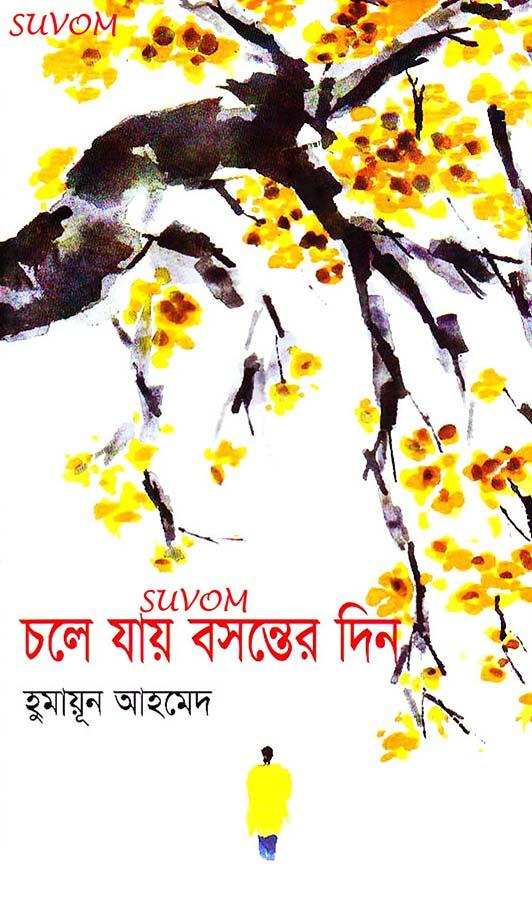

##
নকল দৃশ্য। বানানো, মিথ্যা। কিন্তু দেখে সেরকম মনে হচ্ছে না। আশা গভীর করছে। যে কোনো মুহূর্তে চোখ থেকে টপটপ করে পানি পড়বে। মন বড় টলমল করছে।
জয়নাল সাহেব বিড়বিড় কথা বলছেন। যে গাঢ় মমতা নিয়ে তিনি কথা বলছেন- এত মমতায় এর আগে কি কোনো পিতা তাঁর কন্যার সঙ্গে কথা বলেছে?
‘মাগো তুমি যে আসবা আমি জানতাম। হিমু ভাইকে যখন হাতজোড় করে বললাম আমার মেয়েটাকে এনে দেন। হিমু ভাই, হ্যাঁ-না কিছুই বলল না। কিন্তু আমি বুঝেছি— কাজ হয়েছে। হিমু ভাই আমার মেয়েকে এনে উপস্থিত করবে।’
আশা ফিসফিস করে বলল, ‘আপনার খুব কষ্ট হচ্ছে, প্লিজ কথা বলবেন না।’
জয়নাল সাহেব শান্ত গলায় বললেন, ‘মাগো আমার কষ্ট হচ্ছে ঠিকই, শরীর জ্বলে যাচ্ছে। কিন্তু কী শান্তি যে পাইতেছি এটা একমাত্র আমি জানি আর আল্লাহ পাক জানেন। মা শোনা আমার সময় হয়ে এসেছে। আমি চলে যাব । যাবার আগে তোমার জন্যে দেয়া করে গোলাম— খাস দিলে দোয়া করলাম।’
‘ধন্যবাদ।’
‘মাগো শোন, মানুষ তো ফেরেশতা না। মানুষ ভুল করে। আমি ভুল করতে পারি। আবার তোমার মা-ও ভুল করতে পারে। ভুলগুলো মনে রাখবা না।’
‘জি আচ্ছা।’
‘তোমার চেহারাও তোমার মা’র মতো। সেই নাক সেই চোখ। চুল কটা। তোমার মা’র চুলও ছিল কটা। বড় সুন্দর মা। মাগো তুমি নানান দেশ বিদেশ ঘুরবে—
‘উঁচু কপালী চিড়ল দাঁতি
পিঙ্গল কেশ
ঘুরবে কন্যা নানান দেশ’
কোন একটা সমস্যা মনে হয় হয়েছে। ডাক্তার নার্সরা ছোটাছুটি শুরু করেছেন। ব্যাকুল হয়ে কাঁদছে আশা।
আমি ওসি সাহেবকে নিয়ে বাইরে চলে এলাম। ওসি সাহেবের চোখ ভর্তি পানি। তিনি চাপা গলায় বললেন- ‘খুবই কষ্ট পেলাম। খাকি পোশাক পরে চোখের পানি ফেলা যায় না। খাকি পোশাকের এতে অপমান হয়। কিন্তু চোখেরও পানি আটকাতে পারলাম না। সরি।’
অনেকদিন পর আজ আবার বৃষ্টি নেমেছে। আকাশ ভরতি হয়ে যাচ্ছে ঘন কালো মেঘে। আমি ওসি সাহেবের দিকে তাকিয়ে বললাম--- ‘ওসি সাহেব বৃষ্টিতে কবে শেশবার ভিজেছেন বলুন তো?’
ওসি সাহেব রুমালে চোখ মুছতে মুছতে বললেন– ‘খুব ছোটবেলায় ভিজেছি।’
‘আজ চলুন তো আমার সঙ্গে বৃষ্টিতে ভিজবেন। নাকি খাকি পোশাক পরে বৃষ্টিতে ভিজলে পোশাকের অপমান হবে?’
‘না অপমান হবে না।’
আমরা দুজন বৃষ্টিতে ভিজতে ভিজতে এগোচ্ছি। ঝুম বৃষ্টি নেমেছে। লোকজন অবাক হয়ে দেখছে। কোমরে পিস্তল ঝুলিয়ে খাকি পোশাক পরা কেউ এভাবে বৃষ্টিতে ভেজে না।
‘ওসি সাহেব!’
‘জি।’
‘বর্ষার কোনো গান কী আপনার জানা আছে।’
‘আমি গান জানি না ভাই! আমার স্ত্রী জানে। ওর গলা খুবই সুন্দর। একদিন যদি আসেন ওর গান শুনিয়ে দেব।’
‘আপনার স্ত্রী বর্ষার কোনো গান করেন না? উনার কাছে শুনেছেন এমন একটা গান গুনগুন করে ধরুন।’
ওসি সাহেব গান ধরলেন—
এসো নীপবনে ছায়াবীথি তলে,
এসো করো স্নান নব্যধারা জলে।।
(সমাপ্ত)
একটি শুভম ক্রিয়েশন
চ লে যা য় ব স ন্তে র দি ন
হুমায়ূন আহমেদ

“চলে যায় বসন্তের দিন!”
কী অদ্ভুত কথা! বসন্তের দিন কেন চলে যাবে ? কোনো কিছুই তো চলে যায় না। এক বসন্ত যায়, আরেক বসন্ত আসে। স্বপ্ন চলে যায়, আবারো ফিরে আসে।
আমি হিমু!
আমি কেন বলব— ‘চলে যায় বসন্তের দিন'। আমার মধ্যে কি কোনো সমস্যা হয়েছে ?
কী সেই সমস্যা?
চ লে যা য় ব স ন্তে র দি ন
প্রসঙ্গ : হিমু।
অহঙ্কার প্রকাশ পায় এমন কিছু লেখার ব্যাপারে আমি বেশ সচেতন। খুব চেষ্টা করি কেউ যেন আমার ভেতরের অহঙ্কার বুঝতে না পারে। এই যুক্তিতে, যে-ঘটনাটি আমি এখন বলব তা বলা উচিত না। ঘটনাটির মধ্যে সূক্ষ্ম এবং স্থুল— দুই রীতিতেই অহঙ্কার প্রকাশ পায়। তবু বলে ফেলছি।
দু’বছর আগে আমি কোলকাতা বইমেলায় গিয়েছিলাম। বাংলাদেশ প্যাভিলিয়নে মাত্র ঢুকেছি, হঠাৎ আমাকে চমকে দিয়ে ধুতি-পাঞ্জাবি পরা এক ছেলে পা ছুয়ে প্ৰণাম করে বলল, ‘দাদা, আমি হিমু। দেখুন। আমার পাঞ্জাবি– হলুদ।’ আমি বললাম, ‘হিমুরা তো খালি পায়ে হাঁটাহাটি করে। দেখি তোমার পা ৷’’ সে সবগুলি দাঁত বের করে তার খালি পা দেখাল ।
নিজের দেশে অনেক হিমুর দেখা পেয়েছি। বিদেশে এই প্রথম খাঁটি হিমু দেখলাম। আমার ত্ৰিশ বছর লেখালেখির ফসল যদি হয় কিছু হিমু তৈরি করা— তাহলে তাই সই। আমি এতেই খুশি । পরম করুণাময় আমাকে যথেষ্টই করুণা করেছেন।
হুমায়ূন আহমেদ
নুহাশ পল্লী, গাজীপুর
১০.০১.২০০২
১
হিমু,
আমি মহাবিপদে পড়েছি। তুই আমাকে বিপদ থেকে উদ্ধার কর। বিনিময়ে যা চাইবি তাই দেব। আমার অতি গুণধর পুত্ৰ মনে হয়৷ কাণ্ড ঘটিয়ে ফেলেছে। ভাড়া খাটা টাইপ একটা মেয়েকে বিয়ে করে ফেলেছে। মুখে অবশ্যি এখনো কিছু বলছে না। আমি গন্ধে গন্ধে বুঝে ফেলেছি। আমার ঘুম হারাম হয়ে গেছে। মেয়েটার নাম ফুলফুলিয়া। যে মেয়ের নাম ফুলফুলিয়া সে কেমন মেয়ে বুঝতেই তো পারছিস। ঘটনা এখানেই শেষ না। ঐ হারামজাদি মেয়ের বাবা কী করে জানিস? সে হারমোনিয়াম বাদক। যাত্রাদলে হারমোনিয়াম আরো কী সব নাকি বাজায়। তুই চিন্তা করে দেখ ছেলের বাবা কেবিনেট সেক্রেটারি। আর শ্বশুর হারমোনিয়াম বাদক। হিমু যেভাবেই হোক জহিরকে বুঝিয়ে সুজিয়ে পথে আনতে হবে। ঐ হারামজাদিকে দূরে কোথাও বিয়ে দিয়ে বিদায় করার ব্যবস্থা কর । যাবতীয় খরচ আমি দেব। প্রয়োজনে হারামজাদিকে গয়নাও কিনে দেব।
তোর দোহাই লাগে ঘটনা কাউকে বলবি না। চিঠি পাওয়া মাত্র আমার কাছে চলে আসবি। দুজনে পরামর্শ করে সিদ্ধান্ত নেব। তোর খালু সাহেব এখনো কিছু জানে না। তাকে ইচ্ছা করে কিছু জানাই নি। এতবড় শক সে নিতে পারবে না। ধুম করে এটাক ফেটাক হয়ে যাবে। একবার এটাক হয়েছে। দ্বিতীয়বার হলে আর দেখতে হবে না। হিমু, তুই আমাকে বাঁচা।
ইতি
তোর মাজেদা খালা।
এক পৃষ্ঠার চিঠি। চিঠির সঙ্গে পাঁচশ টাকার চকচকে একটা নোট স্ট্রেপল করা। এটা হলো মাজেদা খালার স্টাইল। তিনি কাউকে চিঠি দিয়েছেন সঙ্গে টাকা স্ট্রেপল করা নেই এমন কখনো হয় নি। চিঠির সঙ্গে টাকা দেয়ার পেছনে একটা গল্প আছে। খুব ছোটবেলায় মাজেদা খালার বড় মামা তাকে একটা চিঠি দিয়েছিলেন। চিঠির সঙ্গে ছিল একটা চকচকে দশ টাকার নোট । জীবনের প্রথম চিঠি, সেই সঙ্গে টাকা। খালার মাথার ভেতরে ব্যাপারটা ঢুকে গেল। তখন থেকেই তিনি ঠিক করেছেন- যখনই কাউকে চিঠি লিখবেন সঙ্গে টাকা থাকবে। শৈশবের প্রতিজ্ঞা কৈশোর পর্যন্ত গড়ায় না। মাজেদা খালা ব্যতিক্রম। তিনি এখনো প্ৰতিজ্ঞা রক্ষা করে চলেছেন। শুরুতে দশ টাকা, বিশ-টাকা দিতেন। অবস্থার পরিবর্তনের সঙ্গে সঙ্গে টাকার পরিমাণ বেড়েছে। এখন চিঠি প্রতি পাঁচশ টাকা ।
মাজেদা খালার চিঠিকে গুরুত্বের সঙ্গে নেয়ার কোনো কারণ নেই। দড়ি দেখলেই যারা সাপ মনে করে তিনি তাদের চেয়েও দুই ডিগ্রি ওপরে— যেকোনো লম্বা সাইজের জিনিস দেখলেই তিনি সাপ মনে করেন। কাছে গিয়ে দেখবেনও না- সাপ কি-না। দূর থেকেই চিৎকার চোঁচামেচি- ওমাগো, দোতলায় সাপ এলো কীভাবে ?
আমি নিশ্চিত জহিরকে নিয়ে তিনি যে মহাদুশ্চিন্তায় পড়েছেন তা পুরোপুরি অর্থহীন। জহির অতি ভালো ছেলে। সে যে কত ভালো তা একটা অতি’ ব্যবহার করে বুঝানো যাবে না। খুব কম করে হলেও তিনটা অতি ব্যবহার করতে হবে- অতি অতি অতি ভালো ছেলে। সে ফিজিক্সে অনার্স পড়ছে। দুৰ্দান্ত ছাত্র। পাশ করেই ঢাকা ইউনিৰ্ভাসিটিতে লেকচারারের চাকরি পেয়ে যাবে। কিন্তু তার জীবনের স্বপ্ন সে একটা কফির দোকান দেবে। আধুনিক কফিশপ। জীবন কাটাবে কফি বিক্রি করে। কারণ কফির গন্ধ তার ভালো লাগে । কফি হাউসে লোকজন আনন্দ করে কফি খেতে খেতে গল্প করে- এই দৃশ্য দেখতে ভালো লাগে এবং তার নিজেরও কফি খেতে ভালো লাগে। সে কফি হাউসের নামও ঠিক করে রেখেছে— ‘শুধুই কফিতা’।
জহিরের ধারণা ফ এবং বা খুব কাছাকাছি। “শুধুই কফিতা” আসলে “শুধুই কবিতা”। নিতান্তই ভালোমানুষ টাইপ লোকজনের মাথাতেই এ রকম আইডিয়া আসে। জহির সরল ধরনের ভালোমানুষ। পৃথিবীতে বক্র ধরনের ভালোমানুষও আছে। বক্র ভালোমানুষরা ভালো। তবে তাদের চিন্তা-ভাবনা বক্ৰ। জহির সেরকম না। ফুলফুলিয়া নামের কোনো মেয়ের সঙ্গে তার যদি ভাব হয়েও থাকে জহিরের ভালো মানুষীর জন্যেই হয়েছে। একজন ভালো মানুষ অন্য একজন ভালোমানুষকে খুঁজে বের করে। একটা চোর খুঁজে বের করে আরেকটা চোরকে। ফুলফুলিয়ার সঙ্গে পরিচয় হলে দেখা যাবে সেও চমৎকার একটি মেয়ে। জহিরের “শুধুই কফিতা” কফিশপে কফি বানানোর জন্যে ছটফট করছে।
কাস্টমারকে নিজেই ছুটে গিয়ে কফি দিচ্ছে। আদুরে গলায় বলছে— কফি কেমন হয়েছে খেয়ে বলুন তো ? ভালো হলে কিন্তু আরেক মগ খেতে হবে।
মাজেদা খালার দুশ্চিন্তা দূর করার জন্যে না, ফুলফুলিয়ার ব্যাপারে কৌতুহলী হয়েই খালার ধানমণ্ডির বাসায় গেলাম। খালু সাহেব আমাকে দেখে প্রথম কিছুক্ষণ এমনভাবে তাকিয়ে থাকলেন যেন চিনতে পারছেন না। তারপর শুকনো গলায় বললেন, কী ব্যাপার ?
আমি বললাম, কোনো ব্যাপার না, আপনাদের দেখতে এসেছি।
খালু সাহেব ‘ও’ বলে ন্যাশনাল জিওগ্রাফি ম্যাগাজিনে মুখ ঢেকে ফেললেন। খালু সাহেব আমাকে সহ্যই করতে পারেন না। মাজেদা খালা আমাকে আড়ালে ডেকে নিয়ে ফিসফিস করে বললেন, তোর খালুর সামনে ঐ প্রসঙ্গ তুলবি না।
আমি বললাম, Ok.
খালা বললেন, জহিরের কাছ থেকে কায়দা করে ব্যাপারটা আগে জেনে নে। আমি যে ঘটনা জানি এটা যেন জহির টের না পায় ।
আমি আবারো বললাম, Ok.
খালা বিরক্ত গলায় বললেন, Ok Ok করিস না তো। তোকে দেখে মনে হচ্ছে তুই ব্যাপারটা হাসি তামাশা হিসেবে নিচ্ছিস । মোটেই হাসি তামাশা না।
অবশ্যই হাসি তামাশা না। জহির কোথায় ? এক্ষুণি সাঁড়াশি দিয়ে জহিরের পেট থেকে সব কথা বের করে ফেলব। শুরু হবে সাঁড়াশি আক্রমণ ।
খালা বললেন, আজ রাতে তুই আমার বাড়িতে থাকবি।
আমি বললাম, কথা বের করে তোমাকে দিয়ে যাই। থাকার দরকার কী ?
থাকলে সমস্যা কী ?
বড়লোকের বাড়িতে আমার ঘুম হয় না খালা।
কমুনিস্টদের মতো কথা বলবি না। তুই কমুনিষ্ট না। তুই হিমু। তোকে যেখানে ঘুমুতে বলা হবে তুই সেখানেই ঘুমাবি। রাতে কী খাবি ?
যা খাওয়াবে তাই খাব ।
নতুন একটা বাবুর্চি রেখেছি, খুব ভালো মোগলাই রাধে। তোর কপাল খারাপ বাবুর্চি ছুটিতে আছে। অসুবিধা নেই পোলাও খা । পোলাও আর ঝাল মুরগির ঝোল, হবে না ? ফ্রিজে ইলিশ মাছ আছে, ইলিশ মাছ ভেজে দিতে বলব ।
আচ্ছা ।
গ্রামের বাড়ি থেকে সরবাটা ঘি এনেছি। খেয়ে দেখ ঘি কাকে বলে।
ঠিক আছে, খাব সরবাটা ঘি।
মাজেদা খালা ছোট্ট নিঃশ্বাস ফেলে বললেন, ঘর ভরতি খাবার। কেউ খায় না।
খায় না কেন ?
তোর খালুর ডিসপেপসিয়া হয়েছে— কিছুই হজম হয় না। পানি খেলেও নাকি টক ঢেকুর উঠে। আর জহিরও খাওয়া ছেড়ে দিয়েছে। গত এক মাস ধরে শুধু ডাল ভাত খাচ্ছে। ঐ দিন বলল শুকনা মরিচ। আর রসুন পিষে ভর্তা বানিয়ে দিলে ভর্তা দিয়ে খাবে। আর কিছু খাবে না।
বলো কী ?
খালা হতাশ গলায় বললেন, আমার দৃঢ় বিশ্বাস ফুলফুলিয়া মেয়েটার সঙ্গে পরিচয় হবার পর জহির এই প্যাখনা করছে। ঐ মেয়ে যেহেতু শুকনা মরিচের ভর্তা দিয়ে ভাত খাচ্ছে, এর বেশি কিছু খাবার মুরাদ নাই কাজেই জহিরকেও তাই খেতে হবে।
তাহলে তো ঘটনা অনেক দূর গড়িয়েছে। তুমি চিন্তা করো না। আমি টেককেয়ার করছি। হয় জহিরের স্ক্রু টাইট দিয়ে দেব আর নয়তো নাট খুলে স্ক্রু বের করে নিয়ে আসব।
তুই একটা কাজ করবি ?
অবশ্যই করব। কাজ করে ভাত খাব। ফুড ফর ওয়ার্ক।
একটা ডিজিটাল রেকর্ডার পকেটে করে নিয়ে যা। জহিরের সঙ্গে কথাবার্তা যা হবে রেকর্ড করে ফেলবি।
মা হয়ে ছেলের গোপন কথা রেকর্ড করা ঠিক হবে ?
অবশ্যই ঠিক হবে। মা ছেলের ভবিষ্যৎ দেখবে না ? সে মাতারির সঙ্গে প্ৰেম করবে। আমি আটকাব না ?
তাহলে দাও তোমার ডিজিটাল রেকর্ডার।
আসল কথা যখন শুরু হবে তখন কায়দা করে রেড বাটন পুশ করবি। পনেরো মিনিট রেকর্ড হবে।
আমি গলা নামিয়ে বললাম, নিজেকে কেমন যেন স্পাই স্পাই লাগছে। খালু সাহেবের তো একটা লাইসেন্স করা পিস্তল আছে। পিস্তলটিও দাও । পকেটে করে নিয়ে যাই। স্পাই যখন হয়েছি পুরোপুরি হই। একটা ম্যাগনিফাইং গ্লাস দাও । স্পাইদের সঙ্গে ম্যাগনিফাইং গ্লাস থাকে।
ফাজলামি করিস না হিমু। তোকে ফাজলামি করার জন্যে ডাকি নি। তোর সব ভালো ফাজলামিটা ভালো না। তুই তোর খালুর সঙ্গে গল্প কর, আমি ডিজিটাল রেকর্ডারটা রেডি করে দেই। ব্যাটারি। আনতে হবে। ব্যাটারি নেই।
আমি খালু সাহেবের (রহমতউল্লাহ তালুকদার) সামনে বসে আছি। কতক্ষণ বসে থাকতে হবে বুঝতে পারছি না। ডিজিটাল ভয়েস রেকর্ডারের ন্যাশনাল জিওগ্রাফি থেকে চোখ তুলছেন না। তিনি হাঁটুর উপর পা তুলে দিয়েছেন। পায়ের পাতা নাড়ছেন। পাশে বসে থাকা মানুষকে সম্পূর্ণ অগ্রাহ্য করার চেষ্টা । চেষ্টা সফল হচ্ছে না। আমি বরং তার কর্মকাণ্ডে মজা পাচ্ছি। আমি তাকিয়ে আছি টিভির দিকে। টিভিতে সিএনএন চলছে। শব্দহীন টিভি। খালু সাহেব ইদানীং শব্দহীন টিভি দেখেন।
হিমু।
জ্বি।
খালু সাহেব ন্যাশনাল জিওগ্রাফি বন্ধ করে আমার দিকে তাকালেন। তার ভুরু কুঁচকে আছে। নাকও খানিকটা কুঞ্চিত। গরম মাড়ে ছাল পুড়ে ঘা হয়ে যাওয়া নেড়ি কুত্তার দিকে মানুষ এইভাবেই তাকায়।
কী করছি আজকাল ?
কিছু করছি না।
“কিছু করছি না” বাক্যটা যেভাবে বললে তাতে মনে হচ্ছে কিছু না করাটা খুব মহৎ কিছু।
খারাপ কিছু করার চেয়ে কিছু না করা তো অবশ্যই মহৎ। চুরি-ডাকাতি তো ……
আমার সঙ্গে বাজে তর্ক করবে না ।
জ্বি আচ্ছা।
ব্যক্তিগতভাবে তোমার প্রতি আমার কোনোই বিদ্বেষ নেই। কিন্তু আমি অকৰ্মণ্য অলস মানুষ সারাজীবন অপছন্দ করেছি, আমৃত্যু করব বলে ধারণা। তুমি যদি কিছু মনে না কর, অন্য কোথাও গিয়ে বস। তুমি আমার পাশে বসে আছ বলেই পড়ায় মন দিতে পারছি না। কিছু মনে করছ না তো ?
জ্বি না কিছু মনে করছি না।
আমি নিশ্চিত তুমি আমার কথায় হার্ট হয়েছ। তোমাকে হার্ট করার জন্যে কথাগুলি বলি নি । আমার নিজের ছেলে জহির যদি তোমার মতো জীবন যাপন করত। তাকেও আমি আমার পাশে বসতে দিতাম না।
খালু সাহেব। আবারো ম্যাগাজিন পাঠে মন দিলেন। এই পরিস্থিতিতে নিঃশব্দে উঠে অন্য কোথাও সরে যাওয়া উচিত। সেটি করছি না। মানুষটাকে আরেকটু রাগিয়ে দিতে ইচ্ছা করছে। রেগে তিনি তেতে থাকবেন, কিন্তু ভদ্রতা ও রুচিবোধের কারণে আমার সঙ্গে কথা বলতে হবে নিচু গলায় প্রায় হাসিমুখে— এই দৃশ্যটি দেখতে ভালো লাগে। আদ্রতা এবং রুচিবোধ থাকারও বিপদ আছে।
আমি এখন জহিরের ঘরে। জহির হাত-পা সোজা করে বিছানায় লম্বা হয়ে হয়ে ঘুমুচ্ছে। গাঢ় ঘুম। এক বছর পর জহিরের সঙ্গে দেখা। মানুষের বয়স বাড়ে, এই ছেলের মনে হয় বয়স কমছে। চেহারায় বালক বালক ভাব এসে গেছে। ঘুমন্ত জহিরকে দেখে মনে হচ্ছে তার স্কুলে ফাইনাল পরীক্ষা চলছে। সে রাত জেগে পড়ছে। মাঝখানে ক্লান্ত হয়ে কিছুক্ষণ শুয়েছিল, ভেবে রেখেছিল রেস্ট নিয়ে আবার পড়া শুরু করবে। রেস্ট নিতে নিতে ঘুম এসে গেছে। আমি ডাকলাম, এই জহির! এই!
জহির স্প্রিং-এর পুতুলের মতো উঠে বসল। কিছুক্ষণ অবাক হয়ে আমার দিকে তাকিয়ে থেকে রোবট টাইপ গলায় বলল, হিমু ভাইজান কটা বাজে ?
আমি বললাম, সাড়ে আট।
জহির বলল, তোমার ন’টার মধ্যে আসার কথা। তুমি সাড়ে আটটায় চলে এসেছি। আশ্চর্য তো!
আমার ন’টার মধ্যে আসার কথা না-কি ?
হু। আমি তোমাকে কল দিয়েছি সাতটা পাঁচ মিনিটে। তখনই বলে দিয়েছি বাই নাইন তুমি যেন চলে আস। মানুষ টাইমের পরে আসে, তুমি চলে এসেছ আগে ।
কীভাবে কাল দিলি ?
আধ্যাত্মিক উপায়ে কল দিয়েছি। ব্যাপারটা যে সত্যি সত্যি কাজ করবে: বুঝতে পারি নি। আমার খুবই অবাক লাগছে।
মনে মনে আমাকে ডেকেছিস ?
হু। কীভাবে ডেকেছি শোন। প্রথমে দরজা জানালা বন্ধ করেছি। তারপর বিছানায় শবাসন করে শুয়েছি। হাত-পা সোজা করে সরলরেখার মতো শোয়া । চোখ বন্ধ করে একমনে বলেছি- ‘হিমু ভাইজান, তুমি যেখানেই থাক রাত ন'টার মধ্যে চলে আস।’ পঞ্চাশবারের মতো বলেছি। বলতে বলতে ঘুমিয়ে পড়েছি। ঘুমিয়ে পড়ার কথা না। আমার ঘুম এসে গেছে। টেলিপ্যাথিক উপায়ে তোমার কাছে ম্যাসেজ চলে গেছে। তুমি চলে এসেছ। How wonderful.
টেলিপ্যাথিক ডাকাডাকির বুদ্ধি কি তোর মাথাতেই এসেছে না কেউ দিয়েছে ?
জহির গলা নিচু করে বলল, একটা মেয়ের কাছ থেকে এই বুদ্ধি পেয়েছি। এই মেয়েটার বাসায় টেলিফোন নেই। ওর যখন কাউকে ডাকার দরকার পড়ে তখন এভাবে ডাকে। তাতে নাকি কাজ হয়। মেয়েটার কথা আগে বিশ্বাস করি নি। এখন পুরোপুরি বিশ্বাস হচ্ছে।
আমি বললাম, মেয়েটার নাম কি ফুলফুলিয়া ?
বেশ কিছুক্ষণ। হতভম্ব হয়ে থাকার পর জহির প্রায় তোতলাতে তোতলাতে বলল, তুমি কীভাবে জানো ?
সেটা দিয়ে তোর দরকার নেই। মেয়েটার নাম ফুলফুলিয়া কিনা বল ?
হু! মেয়েটার বাবা তাকে ডাকেন ফুল। মা যখন বেঁচে ছিলেন তখন ডাকতেন ফুলিয়া। মেয়েটা করেছে কী দু’জনের নাম একত্র করে তার নাম দিয়েছে ফুলফুলিয়া।
তুই আমাকে ট্যালিপ্যাথিক পদ্ধতিতে ডেকে এনেছিস কেন ? ফুলফুলিয়ার বিষয়ে কথা বলার জন্যে ?
হু! তুমি এতসব জানো কীভাবে ? ভাইজান তুমি খুবই বিস্ময়কর একজন মানুষ।
তুই নিজেও কম বিস্ময়কর না। যা হোক এখন ঘটনা কী বল ?
তোমাকে আর নতুন করে কী বলব। তুমি তো মনে হচ্ছে সবই জানো।
তা জানি, তবু তোর মুখ থেকে শুনি…..
জহির চাপা গলায় প্রায় তোতলাতে তোতলাতে বলল- ভাইজান আমি ঠিক করেছি। ফুলফুলিয়াকে বিয়ে করব।
ঠিক করে থাকলে করবি।
মা মনে হয় রাগ করবে। তাই না ?
রাগ অবশ্যই করবে। তোর বাবার পিস্তল দিয়ে ফুলফুলিয়াকে গুলি করার সমূহ সম্ভাবনা।
ওকে কেন গুলি করবে ? গুলি করলে আমাকে করবে।
মাজেদা খালা তোকে কিছুই বলবে না। তুই যদি একটা খুন করে এসে বলিস- মা আমি খুন করে এসেছি। তাহলে খালা বলবেন, ভালো করেছিস । এখন যা গোসল করে আয়— ভাত খা। ইলিশ মাছের ডিম রান্না করেছি।
জহির অবাক হয়ে বলল, এত কিছু থাকতে ইলিশ মাছের ডিমের কথা বললে কেন ?
মনে এসেছে বলেছি। তুই এত অবাক হয়ে তাকিয়ে আছিস কেন ?
ফুলফুলিয়ার সবচে’ পছন্দের খাবার হলো ইলিশ মাছের দিম। আমার আবার ইলিশ মাছের ডিম খুবই অপছন্দের খাবার। ফুলফুলিয়ার আরেকটা পছন্দের খাবারের কথা শুনলে তুমি চমকে উঠবে।
শুকনা মরিচের সঙ্গে রসুন মিশিয়ে বেটে ভর্তা।
জহিরের মুখ হা হয়ে গেল। সত্যিকার বিস্মিত মানুষের মুখ দেখা খুবই আনন্দের ব্যপার। বেশির ভাগ মানুষই বিস্মিত হবার ভান করে, বিস্মিত হয় না। জহির সত্যি সত্যি বিস্মিত। তার হা করে থাকা মুখের দিকে তাকিয়ে আমি খুবই মজা পাচ্ছি।
জহির!
জ্বি ভাইজান ?
ফুলফুলিয়া সম্পর্কে তোর পরিকল্পনা কী বল শুনি। খুব গুছিয়ে বলবি। তার আগে এক মিনিটের জন্যে চোখ বন্ধ করা।
কেন?
আমি একটা লাল বোতাম টিপব ।
কীসের লাল বোতাম ?
কীসের লাল বোতাম তোর জানার দরকার নেই। তোকে চোখ বন্ধ করতে বলছি তুই চোখ বন্ধ করা।
জহির বাধ্য ছেলের মতো চোখ বন্ধ করল। আমি ডিজিটাল ভয়েস রেকর্ডারের বোতাম টিপে জহিরের সামনে রাখলাম।
এখন ইচ্ছা করলে চোখ মেলতে পারিস। লাজ করলে চোখ মেলার দরকার নেই। ফুলফুলিয়া সম্পর্কে তোর পরিকল্পনা গড়বড় করে বলে যা। ফিসফিস করবি না। উঁচু গলায় বলবি। প্রতিটি শব্দ যেন আলাদা করে বোঝা যায়। টু দ্য পয়েন্ট থাকবি। ফেনাবি না। রেডি, গেট সেট গো...।
জহির আবার তার বিখ্যাত রোবট গলায় কথা বলা শুরু করল। মনে হচ্ছে প্রতিমন্ত্রীদের মতো লিখিত ভাষণ পড়ছে। ভাইজান, আমি ঠিক করেছি ফুলফুলিয়াকে বিয়ে করব। আমি জানি সবাই খুব রাগ করবে। কিন্তু আমি মন ঠিক করে ফেলেছি। বিয়ে করব কাজির অফিসে। বিয়েতে তুমি একজন সাক্ষী হবে। আরেকজন সাক্ষীও তুমি জোগাড় করবে। কোথেকে করবে। সেটা তুমি জানো। ফুলফুলিয়া সম্পর্কে এই আমার পরিকল্পনা।
বিয়ের পরেও কি তুই তোর মা’কে জানাবি না ?
বিয়ের পর জানাব। কাজি অফিস থেকে টেলিফোন করে জানাব।
খালা তোকে ষ্ট্রেট বাড়ি থেকে বের করে দেবে। তুই যাবি কোথায় ?
সেটা নিয়ে চিন্তা করি নি।
চিন্তা না করে ভালোই করেছিস। বেশি চিন্তা-ভাবনা করে কিছু হয় না। তুই একভাবে চিন্তা করে রাখবি ঘটনা ঘটবে অন্যভাবে। চিন্তাহীন জীবনযাপন করা উচিত।
ফুলফুলিয়ার একটা ছবি আমার কাছে আছে, দেখবে ?
না।
ক্লাস সেভেনে পড়ার সময়কার ছবি। এখনকার চেহারার সাথে কোনো মিল নেই।
এই সময়ের কোনো ছেলে প্রেমিকার ছবি পকেটে নিয়ে ঘুরে না। ছবি পকেটে নিয়ে ঘুরাটাকে গ্ৰাম্যতা মনে করা হয়। তুই কী মনে করে ঘুরছিস ?
আমি ছবি পকেটে নিয়ে ঘুরছি না তো। ছবিটা পেজ মার্ক হিসেবে ব্যবহার করছি। আমার অবশ্য অন্য একটা পরিকল্পনাও আছে। খুবই হাস্যকর পরিকল্পনা । বলব ?
বল।
আমার কম্পিউটারে ফটোশপ আছে। আমি করব কী ফুলফুলিয়ার ছবি ফটোশপে ঢুকাব। আইনস্টাইনের ছবি তার সঙ্গে জুড়ে দিয়ে প্রিন্ট বের করব। ছবিতে দেখা যাবে আইনস্টাইন ফুলির মাথায় হাত রেখে হাসি হাসি মুখে বসে আছেন।
রবীন্দ্রনাথের সঙ্গে ছবি থাকবে না ? কবিগুরুর কোলে ফুলফুলিয়া বসে আছে ? কবিগুরুর দাড়ির খোঁচা লাগছে ফুলফুলিয়ার গালে।
অবশ্যই থাকবে। কবি নজরুলের সঙ্গে থাকবে। কবি নজরুল হারমোনিয়াম বাজাচ্ছেন— ফুলফুলিয়া গান করছে। ।
বাংলাদেশের বিখ্যাতদের কেউ থাকবে না ?
বাংলাদেশের বিখ্যাতরাও থাকবে, তবে কোনো পলিটিক্যাল ফিগার রাখব না। শেখ হাসিনা, বেগম খালেদা জিয়া এরা বাদ। শুধু কবি-সাহিত্যিকরা থাকবেন। আমার আসল ইচ্ছা ফুলিকে চমকে দেয়া। সমস্যা হচ্ছে মেয়েটা চমকায় না। ভাইজান, তুমি ওকে চমকাবার কিছু বুদ্ধি বের কর তো।
তুই কোনো চিন্তা করিস না। চমক কত প্রকার ও কী কী এই মেয়ে এখন টের পাবে। ওকে আমরা ধারাবাহিক চমকের মধ্যে রাখব। চমকাতে চমকাতে ওর চমকা রোগ হয়ে যাবে। তখন দেখবি কারণ ছাড়াই চমকাচ্ছে।
থ্যাংক য়্যু ।
তুই চুপ করে বসে থাক। আমি খালাকে একটা জিনিস হ্যান্ডওভার করে এক্ষুণি আসছি।
তুমি কি রাতে থাকবে ?
বুঝতে পারছি না। থেকে যেতেও পারি।
যদি রাতে থাক তাহলে ফুলির সঙ্গে পরিচয়টা কীভাবে হলো সেটা তোমাকে বলব। খুবই ইন্টারেস্টিং। শুনলে হাসতে হাসতে তোমার দম বন্ধ হয়ে যাবে। আমার যখনই মনে হয় আমি একা একা হাসি।
জহির মুখ টিপে হাসছে। কী সুন্দর সহজ হাসি! তার আনন্দ সারা শরীর দিয়ে আলোর মতো ঠিকরে বের হচ্ছে। ঠিক তখন একটা ঘটনা ঘটল। টিভির ওপর রাখা জাপানি চিনামাটির বালিকা মূর্তি ধূম করে নিচে পড়ে ভেঙে টুকরা টুকরা হয়ে গেল। দেয়ালে ঝুলানো দুটা ক্যালেন্ডার হঠাৎ পেণ্ডুলাম হয়ে দুলতে শুরু করল। আমরা যে খাটে বসেছিলাম কেউ মনে হয় সেই খাট ধরে হাঁচকা টানে ইঞ্চি খানেক সরিয়ে দিল। মাথার ভেতরের মগজও মনে হয় খানিকটা দুলল। জহির ভীত গলায় বলল, ভাইজান কী হচ্ছে ?
আমি বললাম, তেমন কিছু না। টাইট হয়ে বসে থাক। ভূমিকম্প হচ্ছে!
জহিরের মুখ দ্বিতীয়বারের মতো হা হয়ে গেল। মুখের হা বন্ধ না করেই সে কথা বলল, ভূমিকম্প হচ্ছে মানে কী ?
আমি হালকা গলায় বললাম, মা বসুন্ধরা সামান্য কেঁপে উঠেছেন। ঢাকা শহর দুলছে।
আমরা বসে আছি কেন ?
আমরা বসে আছি কারণ আমরা বসে বসে গল্প করছিলাম। যদি দাঁড়িয়ে দাঁড়িয়ে গল্প করতাম তাহলে— বসে না থেকে দাঁড়িয়ে থাকতাম ।
ততক্ষণে মাজেদা খালার বাড়িতে ভূতের তাণ্ডব শুরু হয়েছে। মাজেদা খালা চিৎকার করছেন। তার কাজের তিনটি মেয়ের দুটি চিৎকার করছে। একটি গলা ছেড়ে কাঁদছে। খালু সাহেব ইংরেজিতে সবাইকে ধমকাচ্ছেন। (দারুণ টেনশনের মুহুর্তে খালু সাহেব বাংলা ভুলে যান।) মাজেদা খালা এন্ড ফ্যামিলি আটকা পড়ে গেছে। বাড়ি থেকে বের হতে পারছে না। কারণ দরজা খোলার চাবি পাওয়া যাচ্ছে না। মাজেদা খালা সম্প্রতি তাঁর পুরো বাড়ির দরজা তালা বদলে আমেরিকান তালা লাগিয়েছেন। এই তালাগুলো বাইরে থেকে লাগানো যায় আবার ভেতর থেকেও লাগান যায় ।
জহির বলল, ভাইজান বাড়িঘর ভেঙে মাথার উপর পড়বে না ?
আমি বললাম, পড়তে পারে।
আমাদের তো রাস্তায় গিয়ে দাঁড়ানো উচিত। রাস্তায় যাবি কীভাবে ? দরজা খোলার চাবি খুঁজে পাওয়া যাচ্ছে না।
ভূমিকম্প থেমে গেছে তাই না ভাইজান ?
প্রথম ধাক্কাটা গেছে। আসলটা বাকি আছে।
আসলটা বাকি আছে মানে ? ভূমিকম্পের নিয়ম হচ্ছে প্রথম একটা ছোট ধাক্কা দেয়। সবাইকে জানিয়ে দেয় যে সে আসছে। তারপর দেয় বড় ধাক্কাটা।
বড় ধাক্কাটা কখন দেবে ?
তার কোনো ধরাবাঁধা নিয়ম নেই। পাঁচ মিনিট পরে দিতে পারে, পাঁচ ঘণ্টা পরে দিতে পারে। আবার ধর পাঁচ দিন পরেও দিতে পারে।
ভাইজান আমার খুবই টেনশন লাগছে।
ফুলফুলিয়ার সঙ্গে কীভাবে পরিচয় হলো সেই গল্পটা শুরু করা। টেনশন কমবে।
দরজায় ধরাম করে শব্দ হলো। মাজেদা খালা ঝড়ের মতো ঘরে ঢুকলেন। কঁদো কঁদো গলায় বললেন, ভূমিকম্প হচ্ছে তোরা জানিস না ?
আমি বললাম, জানি।
জেনেশুনে চুপচাপ বসে আছিস কীভাবে ? রাস্তায় গিয়ে দাঁড়াবি না ?
রাস্তায় যাৰ কীভাবে ? তুমি তো চাবিই খুঁজে পাচ্ছ না।
এতক্ষণ খালা কাঁদোকাঁদো ছিলেন । এইবার কেঁদে ফেললেন। ফোপাতে ফোঁপাতে বললেন- চাবিটা আমি নিজের হাতে ড্রেসিংটেবিলের ফাস্ট ড্রয়ারে রাখি। আজও রেখেছি, আমার পরিষ্কার মনে আছে। ড্রেসিংটেবিলের সব ড্রয়ার খুঁজেছি। চাবি নেই।
আমি বললাম, তোমার শোবার ঘরের বালিশের নিচে দেখ তো।
খালা রাগী গলায় বললেন, বালিশের নিচে চাবি রাখি নি বালিশের নিচে কেন দেখব ?
খোঁজাখুঁজির মধ্যে থাকলে তোমার টেনশনটা কমবে এইজন্যে দেখতে বলছি। কোনো একটা কাজ নিয়ে ব্যস্ত থাক। ভালো কথা, ডিজিটাল ভয়েস রেকর্ডারটার কাজ শেষ। তোমার কাছে কি হ্যান্ডওভার করব ? পনেরো মিনিটের মতো রেকর্ড হয়েছে।
খালা যেভাবে ঝড়ের মতো এসেছিলেন ঠিক সেইভাবে ঝড়ের মতো বের হয়ে গেলেন। তার প্রায় সঙ্গে সঙ্গে ‘চাবি পাওয়া গেছে, চাবি পাওয়া গেছে’ শব্দ শোনা গেল। দরজা খোলার শব্দ হলো। সিড়ি দিয়ে ধুপধাপ শব্দে নামার শব্দ পাওয়া গেল এবং আমাকে চমকে দিয়ে জহির বিছানা থেকে লাফ দিয়ে নেমে বন্দুকের গুলির মতো দরজা দিয়ে বের হয়ে গেল। তার প্রায় সঙ্গে সঙ্গেই ধারণী দ্বিতীয়বার কেঁপে উঠল। ততক্ষণে ঢাকা শহর জেগে গেছে। চারদিকে হৈচৈ চিৎকার শুরু হয়েছে। রাস্তা ভর্তি মানুষ। এর মধ্যে একজন আবার আজান দিচ্ছে। প্রাকৃতিক বিপর্যয়ের সময় আজান দিতে হয়।
আমি জানালা দিয়ে তাকিয়ে আছি। আতঙ্কে অস্থির হওয়া লোকজন দেখতে ভালো লাগছে। তীব্ৰ আতঙ্কেরও কিছু পর্যায় আছে। প্ৰাথমিক পর্যায়ে তীব্ৰ আতঙ্কগ্ৰস্ত মানুষ এক জায়গায় দাঁড়িয়ে থাকতে পারে না। ক্ষুদ্র একটা এলাকার ভেতর ছোটাছুটি করে। আতঙ্ক যত বাড়তে থাকে ছোটাছুটির মাত্রা তত কমতে থাকে। তীব্ৰ আতঙ্কের শেষ পর্যায়ে কোনো ছোটাছুটি নেই।— স্থির হয়ে দাঁড়িয়ে থাকা । তখন চোখের মণিও নড়বে না।
মাজেদা খালাকে দেখা যাচ্ছে। তিনি তাঁর পরিবার নিয়ে বাড়ির সামনের লনে ছোটাছুটি করছেন। তিনি যেদিকে যাচ্ছেন তার কাজের তিন মেয়েও সেদিকে যাচ্ছে। শুধু খালু সাহেব এক জায়গায় দাঁড়িয়ে আছেন। তার হাতে ন্যাশনাল জিওগ্রাফি ম্যাগাজিন। তাঁর ঠোঁটে সিগারেট। তবে সিগারেটে আগুন নেই। ছুটে নিচে নামার সময় নিশ্চয়ই লাইটার নিয়ে যেতে ভুলে গেছেন। জহিরকে দেখতে পাচ্ছি না। সে কি গেট খুলে বাইরে চলে গেছে ? এক দৌড়ে ফুলফুলিয়ার কাছে চলে যায় নি তো ? ফুলফুলিয়া যখন দেখবে খালি গায়ে একজন যুবক দৌড়াতে দৌড়াতে তার কাছে আসছে তখন সে ভালোই মজা পাবে।
মাজেদা খালার বাড়ির মূল লোহার গোটটা বন্ধ। তবে মূল গেটের সঙ্গে বাচ্চা গোটটা খোলা। সেই গেটের ভেতর দিয়ে মাঝে মাঝেই লোকজন উঁকি দিচ্ছে। খালার বাড়ির গেটে চব্বিশ ঘণ্টা দারোয়ান থাকার কথা। কোনো দারোয়ান নেই। যে-কোনো বিপর্যয়ের সময় প্রথম যারা দায়িত্ব ফেলে পালিয়ে যায়। তারা হলো দারোয়ান এবং সিকিউরিটি গার্ড ।
হিমু! এই হিমু!
মাজেদা খালা আমাকে দেখতে পেয়েছেন। মনে হয় তার আতঙ্ক সহনীয় পর্যায়ে চলে এসেছে। তীব্র আতঙ্কগ্রস্ত মানুষ কাউকে চিনতে পারে না। মস্তিষ্কের যে অংশে পরিচিতিমূলক তথ্য থাকে সেই অংশ কাজ করে না। মাজেদা খালা ক্ষিপ্ত গলায় চোঁচালেন– এই হিমু, কথা বলছিস না কেন ?
আমি বললাম, খালা কেমন আছ ?
গাধা তুই ফাজলামি করছিস কেন ? এখন কেমন আছি জিজ্ঞেস করার মানে কী ? নেমে আয়।
তোমরা কি চা খাবে ? চায়ের পানি বসিয়ে দেই ?
নেমে আয় তো। এক্ষুণি নাম।
মাজেদা খালার পাশে খালু সাহেব এসে দাঁড়ালেন। ভাঙা ভাঙা গলায় বললেন— Himu bring me a lighter, খালু সাহেবের গলা ভাঙা ছিল না। মনে হচ্ছে ভূমিকম্পে তাঁর গলা ভেঙে গেছে। ভূমিকম্পে ঘর বাড়ি ভাঙে বলে জানি, মানুষের গলা ভাঙে এটা শুনি নি।
আমি বললাম, খালু সাহেব পোর্চের লাইটটা কি জ্বলিয়ে দিব ?
খালু সাহেব বললেন, কেন ?
আমি বললাম, ন্যাশনাল জিওগ্রাফি ম্যাগাজিনটা পড়তে পারতেন। লনে কতক্ষণ থাকতে হয় তার তো ঠিক নেই।
খালু সাহেব বিড়বিড় করে কী যেন বলছেন। নিশ্চয়ই ইংরেজিতে গালাগালি। দোতলা থেকে শোনা যাচ্ছে না।
রাত বারটা ।
ভূমিকম্প ভীতি সামলে মাজেদা খালা বাড়িতে উঠে এসেছেন। রান্নাবান্না কিছু হয় নি। তাঁর তিন কাজের মেয়ে রান্নাঘরে ঢুকে গেছে। খালা খালু দু’জনই বসার ঘরের সোফায় পাশাপাশি বসে আছেন। আমি বসে আছি তাদের ডানপাশের সোফায় । খালু সাহেব ভাঙা গলায় স্ত্রীর সঙ্গে গল্প করছেন। গল্পের বিষয়বস্তু— ভূমিকম্প ।
বুঝলে মাজেদা— বিরাট কোইনসিডেন্স। যখন ভূমিকম্প হচ্ছিল তখন আমি ন্যাশনাল জিওগ্রাফিতে ভূমিকম্প নিয়েই একটা আর্টিকেল পড়ছিলাম। আর্টিকেলের নাম— Untamed Nature, আর্টিকেলের একটা চেপ্টার ভূমিকম্পের বর্ণনা দিয়ে শুরু হয়েছে। ঐ চেপ্টারটা পড়তে শুরু করেছি তখনই ভূমিকম্প শুরু হলো। ইন্টারেস্টিং কোইনসিডেন্স না ?
খালা জবাব দিলেন না। তিনি ভাবলেশহীন মুখে টিভির দিকে তাকিয়ে আছেন। টিভিতে এখনো সিএনএন। এখনো টিভি শব্দহীন। মাজেদা খালাকে দেখে মনে হচ্ছে তাঁর আতঙ্ক এখনো পুরোপুরি যায় নি। স্বামীর প্রশ্নের জবাব তো তিনি দিলেনই না, উঠে নিজের ঘরে চলে গেলেন। খালু সাহেব আমার দিকে তাকিয়ে বললেন, হিমু তোমার কাছে কোইনসিডেন্সটা ইন্টারেস্টিং মনে হচ্ছে না ?
আমি বললাম, অবশ্যই ইন্টারেস্টিং। তবে আপনি দয়া করে বজ্রপাতের উপর কোনো আর্টিকেল পড়বেন না।
কেন ?
বজ্ৰপাতের উপরে আর্টিকেল পড়লেন– সঙ্গে সঙ্গে আপনার উপর বাজ্রপাত হলো । পুড়ে কয়লা হয়ে গেলেন।
তুমি কি রসিকতা করার চেষ্টা করছি ?
জ্বি।
তোমার সঙ্গে আমার সম্পর্ক রসিকতার না। রসিকতা করবে না।
জ্বি আচ্ছা।
একটা জিনিস খেয়াল রাখবে। তোমার নাম হিমু। তুমি একজন ভ্যাগাবল্ড। তুমি চার্লি চ্যাপলিন না।
জ্বি আমি খেয়াল রাখব।
তুমি জহিরের ঘরে যাও। ওকে বিরক্ত কর। ওর সঙ্গে হিউমার করার চেষ্টা কর। আমার সঙ্গে না।
জি আচ্ছা ।
আমি উঠে দাঁড়ালাম। খালু সাহেব থমথমে গলায় বললেন, তোমাকে আরেকটা বিষয় বলি। দয়া করে সহজ উত্তর দেবে, প্যাচানো উত্তর দেবে না।
জ্বি আচ্ছা।
ভূমিকম্প হচ্ছে। সবাই দৌড়ে নেমে খোলা জায়গায় চলে গেল। তুমি ঘরে বসে রইলো। খুব ভালো কথা, থাক ঘরে বসে, কিন্তু জহিরকে আটকে রাখলে কেন ?
খালু সাহেব, আমি জহিরকে আটকে রাখি নি। ও হঠাৎ খালি গায়ে দৌড় দিল। যাকে বলে ভো দৌড়।
দৌড়ে কোথায় গেল ?
প্রথম বুঝতে পারি নি কোথায় গেছে। পরে ওকে আবিষ্কার করলাম ছাদে। সে কোন বইয়ে পড়েছে ভূমিকম্পের সময় রাতের আকাশে আলোর খেলা হয়। বিচিত্ৰ ভাষায় আকাশে লেখা ভাসে। সত্যি কি-না দেখতে গেছে।
যে ছেলে ফিজিক্স পড়ছে সে ভূমিকম্পে আকাশে হাবিজাবি লেখা হয় এইসব বিশ্বাস করে ? ওকে তো কানে ধরে উঠবোস করানো দরকার। ওকে আমার কাছে পাঠাও তো। তার সঙ্গে কথা বলা দরকার।
খালু সাহেব আজ কথা না বলে আরেকদিন বলুন। এখন সে একটু ব্যস্ত আছে। ব্যস্ত বলেই আমি আপনার কাছে বসে আছি। আপনি বিরক্ত হচ্ছেন জেনেও বসে আছি।
কী নিয়ে ব্যস্ত ?
সে টেলিপ্যাথির মাধ্যমে একজনের কাছে খবর পাঠাবার চেষ্টা করছে। জানার চেষ্টা করছে ভূমিকম্পে তাদের কোনো ক্ষতি হয়েছে কি-না। পদ্ধতিটা খুব সহজ। শবাসন হয়ে চোখ বন্ধ করে বিছানায় শুয়ে থাকতে হয়.
চুপ কর।
জ্বি আচ্ছা।
খালু সাহেব থমথমে মুখে জহিরের ঘরের দিকে এগুলেন। আমিও তাঁর পেছনে পেছনে গেলাম। ইন্টারেস্টিং কোনো পরিস্থিতি হয় কি-না দেখার জন্যে যাওয়া। তেমন কিছু হলো না। খালু সাহেব হতভম্ব হয়ে দেখলেন, তাঁর পুত্র চোখ বন্ধ করে সরল রেখা হয়ে শুয়ে আছে। মুখে বিড়বিড় করছে। খালু সাহেব যেভাবে নিঃশব্দে ছেলের ঘরে ঢুকেছেন সেইভাবে নিঃশব্দেই ছেলের ঘর থেকে বের হলেন। আমাকে ইশারায় তার পেছনে পেছনে আসতে বললেন । আমিও বাধ্য ছেলের মতো তাকে অনুসরণ করলাম। তিনি আমাকে সিঁড়ির কাছে নিয়ে গিয়ে কঠিন গলায় বললেন, হিমু তুমি নানাবিধ যন্ত্রণা তৈরি করা। আমি আমার পরিবারে কোন যন্ত্রণা চাই না। তুমি আর এ বাড়িতে আসবে না। তুমি এক্ষুণি বিদেয় হও ।
আমি বিনীত ভঙ্গিতে বললাম, আমার রাতে খাওয়ার কথা। ইলিশ মাছ ভাজা হচ্ছে।
কথা বাড়াবে না। বিদেয় হও ।
আমি সিঁড়ি দিয়ে নামতে শুরু করলাম। খালু সাহেব দরজা ধরে দাঁড়িয়ে আছেন। তাঁর মুখ থমথম করছে।
২
হিমু,
তুই রাতে কাউকে কিছু না বলে চলে গেলি কেন ? তুই নিজেকে কী ভাবিস ? যা মনে আসে করে বেড়াবি ? তোকে কেউ কিছু বলতে পারবে না ? বাংলাদেশের সব মানুষের মাথা কি তুই কিনে নিয়েছিস ?
ঐ রাতে কী ঘটেছিল আমার কাছে শোন। আমার প্রচণ্ড মাথা ধরেছিল। আমি বাতি বন্ধ করে শুয়েছিলাম। এতে মাথা ধরা আরো বাড়ল। তুই বোধহয় জানিস না শুয়ে থাকলে আমার মাথা ধরা বাড়ে। আমার সবই উল্টা । যাই হোক মাথা ধরা যখন খুব বাড়ল তখন মাথা ধরার টেবলেটের খোঁজে গেলাম তোর খালুর কাছে। দেখি সে একা মুখ আমসি করে বসে আছে। তাকে জিজ্ঞেস করলাম, হিমু কোথায় ? তোর খালু বলল, জানি না কোথায়। আমি বললাম, সে চলে গেছে না কি ? তোর খালু বলল, জানি না। যেতেও পারে, খবর না দিয়ে যে আসে সে খবর না দিয়ে চলে যায়। তখন আমি গোলাম জহিরের ঘরে। সেখানেও তুই নেই। কাজের মেয়েরাও কেউ কিছু বলতে পারে না। গেটের দারোয়ানকে জিজ্ঞেস করলাম। সেও বলল, গেট দিয়ে কাউকে যেতে দেখে নি। তোর খালু বলল, চলে গেছে— গেছে। এত হৈচৈ করছ, কেন ? টেবিলে খাবার দিতে বলে ।
হিমু, কাউকে কিছু না বলে চলে যাওয়াটা ঠিক না। আমি রাগ করেছি এবং মনে কষ্ট পেয়েছি। আমি যাদেরকে বেশি স্নেহ করি। তারাই আমাকে কষ্ট দেয়। জহিরের কথাই মনে করে দেখ ।
ডিজিটাল ভয়েস রেকর্ডারে জহিরের সব কথাবার্তা এই নিয়ে পাঁচবার শুনলাম। আমার হাত-পা ঠাণ্ডা হয়ে আসছে। এইসব কী ধরনের কথাবার্তা ? আমার তো মনে হয় ছেলেটা পাগল হয়ে গেছে। তার ডাক্তারি চিকিৎসা দরকার। কোনো সুস্থ মাথার ছেলে এ ধরনের কথা বলতে পারে না। ভূমিকম্পের রাতে সে তার বাবার সঙ্গে যে কথাবার্তা বলেছে সেটা শুনলেই যে কেউ বলবে, ছেলেকে পাবনা মেন্টাল হসপিটালে পাঠিয়ে দাও। ঐটাই তার জন্যে উপযুক্ত জায়গা। ঘটনা। কী হয়েছে শোন। বাপ-ছেলে খেতে বসেছে। আমি বসি নি। প্রথমত, আমার মাথার যন্ত্রণা; দ্বিতীয়ত, তোর জন্য রান্না-বান্না করিয়েছি। আর তুই না বলে পালিয়ে গেছিস ; যাই হোক মূল ঘটনা শোন। জহিরের বাবা বলল, পড়াশোনা কেমন হচ্ছে ?
জহির বলল, ভালোই হচ্ছিল। তবে এখন হচ্ছে না।
জহিরের বাবা বলল, হচ্ছে না কেন ?
জহির বলল, ফিজিক্স পড়ে কোনো লাভ নেই বাবা ।
লাভ নেই কেন ?
প্রকৃতিকে বোঝার জন্যেই ফিজিক্স পড়া। আমি চিন্তা করে দেখেছি। এখন পর্যন্ত ফিজিক্সের যে উন্নতি হয়েছে তা দিয়ে প্রকৃতিকে কিছুতেই বোঝা যাবে না। বরং উল্টো হবে। ফিজিক্সের জ্ঞান আমাদের চিন্তাকে আরো ধোঁয়াটে করে ফেলবে ।
জহিরের বাবা তখন শান্ত গলায় বলল, আমি ফিজিক্স জানি না। আমি ইতিহাসের ছাত্র। তুই কী বলছিস বুঝিয়ে বল।
জহির বলল, সব কিছু বোঝাতে পারব না। একটা শুধু বলি, ফিজিক্স বলছে মহাবিশ্ব সৃষ্টি হয়েছে বিগ ব্যাং থেকে। প্রচণ্ড শব্দে কসমিক ডিম ফেটে মহাবিশ্ব তৈরি হলো। যে মুহুর্তে কসমিক ডিম ফাটল সেই মুহূর্ত থেকে সময়ের শুরু। কসমিক আগে কী ছিল কিছুই বলতে পারছে না।
ডিম ফাটার আগে কী ছিল ফিজিক্স তা বলতে পারছে না বলে তুই ফিজিক্স পড়বি না ?
না। আমার কাছে ফিজিক্স পড়া অর্থহীন মনে হচ্ছে।
কী করবি বলে ঠিক করেছিস ?
বাবা, আমি একটা কফিশপ চালাব।
বুঝতে পারছি না। কী বলছিস। কী চালাবি ?
কফিশপ। ছোট্ট ঘরোয়া ধরনের কফিশপ। দোকান সারাদিন বন্ধ থাকবে। খুলবে সন্ধ্যার পর। কাটায় কাটায় বারটার সময় কফিশপ বন্ধ হবে।
রসিকতা করছিস নাকি ?
না, রসিকতা কেন করব ? কফিশপের নাম ঠিক হয়ে গেছে— ‘শুধুই কফিতা’।
নাম ‘শুধুই কফিতা’ ?
হ্যাঁ, আমার কফিশপের নাম “কফিতা”। এখন কী করছি জানো বাবা ? যে মাগে করে কফি দেয়া হবে সেই মগের ডিজাইন করছি।
মগের ডিজাইন করছিস ?
হ্যাঁ। কোন রঙের মাগে কফির গেরুয়া রঙ ভালো ফুটে সেটা দেখা হচ্ছে। দেখা যাচ্ছে গাঢ় সবুজ রঙের মাগে কফির রঙ ভালো ফুটে । কাজেই আমাদের মগের রঙ হলো গাঢ় সবুজ। এই মগ হবে গ্লাসের মতো। মগে চায়ের কাপের মতো কোনো বোটা থাকবে না।
বোটা থাকবে না ?
জ্বি না। কেন থাকবে না শুনতে চাও ?
শুনি কেন থাকবে না।
পানির গ্লাস আমরা হাত দিয়ে ধরি। ঠাণ্ডা পানির গ্লাস হাত দিয়ে ধরেই পানির শীতলতা আমরা টের পাই। আমাদের ভালো লাগে। গরম কফির উষ্ণতাও ঠিক একইভাবে আমরা কফির মগ হাত দিয়ে ধরা মাত্র টের পাব। আমাদের ভালো লাগবে।
তুই তাহলে কফির দোকান দিচ্ছিস ?
জ্বি।
তোর নেক্সট পরীক্ষা যেন কবে ?
নয় তারিখ- সাত দিন আছে। পরীক্ষা তো দিচ্ছি না!
পরীক্ষা দিচ্ছিস না ?
না। কফিশপের আইডিয়া মাথায় আসামাত্র পড়াশোনা ছেড়ে দিয়েছি।
জহিরের বাবা এরপরেও বেশ সহজভাবে খাওয়া শেষ করল। বেসিনে হাত ধুয়ে এসে আবার খাবার টেবিলে বসল। জহিরের খাওয়া তখনো শেষ হয় নি। জহিরের বাবা শান্তমুখে ছেলের খাওয়া দেখতে লাগল। খাওয়া শেষ হবার পর জহিরের বাবা বলল, নয় তারিখে তুই পরীক্ষা দিতে যাবি। যদি না যাস তাহলে ঐ দিনই এক বস্ত্ৰে বাড়ি থেকে বের হয়ে যাবি। কথা চালাচালি আমার পছন্দ না । আমি আমার কথা বলে শেষ করলাম। এই বিষয়ে নয় তারিখ পর্যন্ত আর কোনো কথা বলব না।
জহির বলল, আচ্ছা।
হিমু, এই হলো ঘটনা। জহিরের বাবাকে আমি মোটেই দোষ দিচ্ছি না। সে তো তাও ধৈর্য ধরে ছেলের কথা শুনেছে। আমার ইচ্ছা করছিল- খাবার টেবিলেই ঠাস করে ছেলের গালে এক চড় মারি। যাতে এক চড়ে মাথার সব আইডিয়া নাকের ফুটো দিয়ে বের হয়ে যায়।
ঐ ঘটনার পর আমি তোর খালুকে ফুলফুলিয়া মেয়েটার কথা বলেছি। আমি চিন্তা করে দেখলাম, ছেলে যেভাবে বিগড়াচ্ছে ফুলফুলিয়ার ব্যাপারটা আর গোপন রাখা ঠিক হবে না। ক্যাসেট করা কথাবার্তাও তোর খালুকে শুনিয়েছি। বেচারা যে কী পরিমাণে শকড হয়েছে তুই বিশ্বাস করবি না। তিনদিনের একটা কনফারেন্সে তার সুইডেনে যাবার কথা ছিল। এটা সে বাতিল করেছে। সিগারেট ছেড়ে দিয়েছিল, আবার সিগারেট ধরেছে। ভোস ভোস করে দিনরাত সিগারেট টানছে। আমি কিছু বলছি না। সিগারেট টেনে যদি টেনশন কিছু কমে তাহলে কমুক। গতকাল রাতে ঢাকা ক্লাবে গিয়েছিল। সেখান থেকে ফিরেছে মদ খেয়ে। সিগারেটের সঙ্গে মদ খাওয়াও ছেড়ে দিয়েছিল। তার ভাবভঙ্গি দেখে মনে হচ্ছে আবারো মদ ধরবে । চিন্তা করে দেখ আমি কী বিপদে পড়েছি। তোর খালুকে আমি এখন কিছুই বলব না। নয় তারিখ পার হোক। তারপর দেখা যাক পানি কোন দিকে গড়ায়।
হিমুরে, আমি মহাবিপদে আছি। তোকে যে বাড়িতে আসতে বলব, তোর সঙ্গে পরামর্শ করব সেই উপায় নেই।
জহিরের বাবা তোর এ বাড়িতে ঢোকা নিষিদ্ধ করে দিয়েছে। দারোয়ানকে ডেকেও বলে দেয়া হয়েছে তুই যেন এ বাড়িতে ঢুকতে না পারিস। জহিরের বাবার ধারণা তার ছেলের এই সমস্যার মূলে আছিস তুই। তুই না-কি মানুষের মাথায় হালকা বাতাস দিয়ে আইডিয়া ঢুকিয়ে সটকে পড়িস। আমি তাকে বলেছি- এটা ঠিক না। হিমু আমাদের দলে। জহিরের কথাবার্তা খুব কায়দা করে হিমুই রেকর্ড করে এনেছে। তোর খালু। বলেছে- হিমু সব দলেই আছে। জহির যদি ফুলফুলিয়াকে বিয়ে করে তাহলে দেখা যাবে উকিল বাবা— হিমু। তোর খালুর কথাও আমি ফেলতে পারছি না। বল তো আমি কী করি ?
এদিকে ফুলফুলিয়া মেয়েটার বিষয়ে তোর খালুও কিছু খোঁজখবর বের করেছে। মেয়েটা কী করে শুনলে তুই মাথা ঘুরে পড়ে যাবি। সে একটা ক্লিনিকে আয়ার কাজ করে। রোগীদের গু মুত পরিষ্কার করে। অবস্থাটা চিন্তা করে দেখ।
আমি মানত করেছি। সমস্যা সমাধান হলেই আজমীর শরিফে চলে যাব। খাজা বাবার দরবারে শুকরানা নামাজ পড়ব। সেখানকার এতিম মিসকিনদের একবেলা খাওয়াব। আমার যে কী রকম অস্থির লাগছে তোকে বলে বুঝাতে পারব না।
মানসিক যে অবস্থার ভেতর দিয়ে যাচ্ছে। আমি চাই না সেটা আরো খারাপ হোক। তবে তুই দূর থেকে আমার একটা উপকার করতে পারিস। ফুলফুলিয়া মেয়েটার ঠিকানা দিচ্ছি। তার সঙ্গে দেখা করে এই মেয়েটার বিষয়ে আমাকে একটা রিপোর্ট দে। ভয় দেখিয়ে কিংবা লোভ দেখিয়ে জহিরের কাছ থেকে মেয়েটাকে সরিয়ে দেবার ব্যবস্থা কর। এর জন্যে টাকা পয়সা যা লাগে আমি খরচ করব। কেয়ারটেকারের কাছে ঠিকানা আছে। তুই তার কাছ থেকে ঠিকানাটা নে। ওর কাছে দশ হাজার টাকাও দিয়ে দিয়েছি। প্রয়োজনে গুণ্ডা লাগিয়ে মেয়েটাকে হুমকি ধমকি দিয়ে অন্য কোথাও সরিয়ে দে। এই উপকারটা তুই আমার করা।
ইতি
তোর মাজেদা খালা
পুনশ্চ : হিমু আমার মাথাটা আসলেই খারাপ হয়ে গেছে। যে ঘটনাটা তোকে জানাবার জন্যে চিঠি লিখেছিলাম। সেই ঘটনাই জানানো হয় নি। অথচ চিঠি শেষ করে বসে আছি। আসলে আমি আর টেনশন নিতে পারছি না বলে সব এলোমেলো হয়ে যাচ্ছে। সেদিন মাথা ধরার ট্যাবলেট ভেবে তোর খালুর দুটা প্রেসারের ওষুধ খেয়ে ফেলেছি। তারপর দেখি ধুম করে প্রেসার নেমে যাচ্ছে। মাথায় পানি ঢালাঢালি- ডাক্তার ডাকাডাকি ।
যাই হোক, মূল ঘটনাটা মন দিয়ে শোন। এখন পর্যন্ত ঘটনাটা নিয়ে কারো সঙ্গেই আলাপ করি নি। শুধু আমার কাজের মেয়ে তিনটিকে বলেছি। কাজটা ভুল হয়েছে। তিনটা মেয়ে ভয়ে অস্থির হয়ে আছে। তোর খালুকে ঘটনাটা বলতে গিয়েও বলি নি। তাকে যা বলব— সে গম্ভীর হয়ে বলবে, এটা কিছু না। তুমি স্বপ্ন দেখেছি। চোখের সামনে দেখা জলজ্যান্ত জিনিসকে কেউ যদি বলে ‘স্বপ্ন তাহলে কেমন রাগ লাগে তুইই বল ?
ঘটনাটা ঘটেছে ভূমিকম্পের রাতে। তখন ঘটনাটা আমি নিজেও বুঝতে পারি নি। ভূমিকম্পের ভয়ে একটা ঘোরের মধ্যে ছিলাম। কী দেখছি বা কী দেখছি না বুঝতেই পারি নি। যতই দিন যাচ্ছে ব্যাপারটা ততই পরিষ্কার হচ্ছে- আমার হাত-পা ঠাণ্ডা হয়ে আসছে।
ভূমিকম্পের রাতের কথা তোর নিশ্চয়ই মনে আছে। দরজা ভেতর থেকে লক করা। আমি দরজা খুলতে পারছি না। চাবি পাচ্ছি না। ড্রেসিংটেবিলের ড্রয়ার উলট-পালট করছি। তোর খালু পাগলের মতো বিড়বিড় করছে। এক সময় ছুটে গেলাম জহিরের ঘরে। তখন তুই বললি বালিশের নিচে খুঁজে দেখতে। আমি গেলাম শোবার ঘরে। আমি মশারি খাটিয়ে ঘুমাই। ঢাকায় ডেঙ্গু রোগ দেখা দেয়ার পর থেকে এই ব্যবস্থা। রাত আটটা বাজতেই কাজের মেয়ে মশারি খাটিয়ে দেয় । আমি গোলাম অবাক হলাম— দেখি বাড়ির চাবি। চাবি হাতে নিতে গিয়ে আরেকটা জিনিস দেখলাম— দেখি বুড়ো একজন মানুষ কুঁজো হয়ে মশারির ভেতর বসে আছে। তাকিয়ে আছে আমার দিকে। তখন আমার মাথাতেই নেই যে এটা একটা ভয়ঙ্কর দৃশ্য। আমার মশারির ভেতর কোনো বুড়ো মানুষ বসে থাকতে পারে না। ভূমিকম্পের ভয়ে আমি এতই অস্থির যে বুড়ো মানুষ আমার দিকে তাকিয়ে আছে এটা আমার মাথায় ঢুকাল না। আমি চাবি নিয়ে দরজা খুলে দৌড়ে নিচে চলে গেলাম।
হিমু, ব্যাপারটা কী বল তো ? আমার কি মাথা খারাপ হয়ে যাচ্ছে ? কোনো সাইকিয়াট্রিষ্টের সঙ্গে আমার কি কথা বলা উচিত ?
সাক্ষাতে এটা নিয়ে তোর সঙ্গে কথা বলব। আপাতত তুই ফুলফুলিয়ার ব্যাপারটা দেখ। প্রয়োজনে কেয়ারটেকারকে সাথে নিয়ে যা। এই ধরনের মেয়েরা হিংস্র প্রকৃতির হয়ে থাকে। তাদের হাতে পোষা গুণ্ডাপাণ্ডাও থাকে। তোকে একা পেয়ে কিছু করে বসতে পারে। দুজন থাকলে কিছুটা রক্ষা। ভালো থাকিস ।
ফুলফুলিয়া যার নাম তার স্বভাব-চরিত্র যাই হোক সে দেখতে খুব সুন্দর হবে এরকম ধারণা হবেই। আমি ধরেই নিলাম মেয়েটিকে দেখে মুগ্ধ বিস্ময়ে কিছুক্ষণ তাকিয়ে থাকব। মনে মনে বলব, বাহ।
মেয়েটির বাসা ঝিকাতলায়। ঠিকানা লেখা কাগজ হাতে নিয়ে তার বাসা খুঁজছি আর কল্পনা করছি মেয়েটা দেখতে কেমন হবে। গায়ের রঙ গৌর বর্ণ। মাথা ভর্তি চুল। কুচকুচে কালো চুল না। সামান্য পিঙ্গল ভাব আছে। অতিরিক্ত ফর্সা মেয়েরা সাধারণত পিঙ্গলকেশী হয়। রোগা, গোলগাল মুখ। খুবই ছটফট স্বভাবের মেয়ে। স্থির হয়ে এক জায়গায় বসেও থাকতে পারে না। অকারণে হেসে ফেলার বাতিকও আছে। সিরিয়াস ধরনের কথাতেও মুখ আড়াল করে হাসছে।
অনেকক্ষণ কড়া নাড়ার পর যে মেয়েটি দরজা খুলে দিল সে-ই যে ফুলফুলিয়া এতে আমার মনে সন্দেহের তিল মাত্ৰও নেই। অথচ কল্পনার সঙ্গে তার কোনো মিল নেই। শান্ত চেহারার শ্যামলা মেয়ে। রোগাটা ঠিক আছে, তবে মুখ গোলাকার না, লম্বাটে। মনে হয় রুটি বানাচ্ছিল। হাতে ময়দা লেগে আছে। ফুলফুলিয়া অবাক হয়ে আমাকে দেখছে। আমাকে দেখে এত বিস্মিত হচ্ছে কেন, আমি বুঝতে পারছি না। আমার চেহারা বিস্মিত হবার মতো না। আমি সহজ গলায় বললাম, ফুলফুলিয়া কেমন আছ ?
মেয়েটা খানিকটা ভীত গলায় বলল, ভালো আছি।
রুটি বানাচ্ছিলে নাকি?
মেয়েটার গলা থেকে বিস্ময় ভাবটা চলে গেল। সেখানে চলে এলো আনন্দ । সে বলল, আপনি হিমু ভাই না ?
আমি বললাম, হ্যাঁ। চিনেছ কীভাবে ? জহির নিশ্চয়ই খুঁটিয়ে খুঁটিয়ে আমার চেহারার বর্ণনা তোমার কাছে করেছে।
উনি কিছুই বলেন নি। উনি শুধু বলেছেন হিমু ভাইজান যদি তোমার কাছে আসেন তাহলে তুমি সঙ্গে সঙ্গে বুঝে ফেলবে। তিনি দেখতে কেমন, এইসব কিছু বলার দরকার নেই।
আমি যে হলুদ পাঞ্জাবি পরি এটা নিশ্চয়ই বলেছে।
না, হলুদ পাঞ্জাবির কথাও বলেন নি। বাসা অন্ধকার কেন ?
বারান্দার বাতিটা চুরি হয়ে গেছে এই জন্যে অন্ধকার। ভেতরে আসুন, ভেতরে আলো আছে।
তুমি ছাড়া বাসায় আর কে আছে ?
রহমতের মা বলে একজন মহিলা আছেন । উনি আমার পাহারাদার । উনি ছাড়া আর কেউ নেই।
তোমার বাবা কোথায় ?
ফুলফুলিয়া মিষ্টি করে হেসে বলল, বাবা আমার উপর রাগ করে দুপুরবেলা চলে গেছেন। বলে গেছেন আর ফিরবেন না ।
প্রায়ই কি এরকম রাগ করে চলে যান ?
জ্বি।
রাগ ভেঙে গেলে দিনে দিনেই কি ফেরেন ?
না, সব দিন ফেরেন না। এমনও হয়েছে চার পাঁচদিন পরে ফিরেছেন।
আমি ফুলফুলিয়ার সঙ্গে একটা ঘরে এসে ঢুকলাম। ঘরে সস্তার একটা খাট পাতা আছে। টেবিল চেয়ার আছে। আলনা আছে। আলনার কাপড়-চোপড় দেখে মনে হচ্ছে এই ঘরে ফুলির বাবা ঘুমান।
হিমু ভাইজান, দুধ ছাড়া এককাপ চা খাবেন ?
খাব।
ঘরে খুব ভালো ঘি আছে। গরম রুটিতে ঘি মাখিয়ে চিনি দিয়ে দেই ?
দাও।
ফুলফুলিয়া খানিক্ষণ ইতস্তত করে বলল, উনি বলছিলেন। আপনি নাকি একজন মহাপুরুষ। আপনি যে-কোনো অসাধ্য সাধন করতে পারেন। এটা কি সত্যি ?
না, এটা সত্যি না।
আপনি কি মানুষের ভবিষ্যৎ বলতে পারেন ?
তাও পারি না।
তাহলে উনি কেন এত বড় গলায় আপনার কথা বললেন ? আপনি কী পারেন ?
আমি হাসতে হাসতে বললাম, আমি সুখে এবং দুঃখে মানুষের পাশে থাকতে পারি।
সে তো সবাই পারে। আপনার বিশেষত্ব কী ?
আমার বিশেষত্ব হচ্ছে আমি সব সময় একটা হলুদ পাঞ্জাবি পারি। সবাই হলুদ পাঞ্জাবি পরে না।
সব সময় হলুদ পাঞ্জাবি কেন পরেন ?
হলুদ পাঞ্জাবি পরার প্রধান কারণ হচ্ছে- হলুদ রঙের কাপড় সহজে ময়লা হয় না। একবার ধুয়ে অনেক দিন পরা যায়।
এটাকে বললেন প্রধান কারণ । অপ্রধান কারণ কী ?
অপ্রধান কারণ আমার বাবা। তিনি মহাপুরুষ বানাবার একটা স্কুল খুলেছিলেন। আমি ছিলাম স্কুলের একমাত্র ছাত্র। হলুদ পাঞ্জাবি হলো স্কুল ড্রেস। বাবার ধারণা হয়েছিল গেরুয়া বৈরাগ্যের রঙ । গেরুয়া রঙের কাপড় পরলে মনে বৈরাগ্য আসে। মহাপুরুষদের বৈরাগ্য থাকতে হয়।
ফুলফুলিয়া কথা শুনে মজা পাচ্ছে। আগ্রহ নিয়ে তাকিয়ে আছে। ফুলফুলিয়ার পাহারাদারও একবার উকি দিয়ে দেখে গেল। মৈনাক পর্বতের মতো শরীর। সাধারণভাবে নিঃশ্বাস নিচ্ছে কিন্তু ফোস ফোঁস শব্দ হচ্ছে। এ রকম পাহারাদার থাকলে আর চিন্তা নেই। ফুলফুলিয়া বলল, আপনার বাবা কি সত্যি সত্যি আপনাকে মহাপুরুষ বানাবার চেষ্টা করেছিলেন ?
আমি হাসতে হাসতে বললাম, বাবা রীতিমতো স্কুল খুলে বসেছিলেন! স্কুলের তিনিই প্রিন্সিপাল, তিনিই শিক্ষকমণ্ডলি, তিনিই ড্রিল স্যার। এত করেও শেষ রক্ষা হয় নি। স্কুল থেকে পাশ করে বের হবার আগেই বাবার মৃত্যু। বাবার মৃত্যু মানেই প্রিন্সিপাল স্যারের মৃত্যু, শিক্ষকমণ্ডলির মৃত্যু এবং ড্রিল স্যারের মৃত্যু।
নিজের বাবার মৃত্যুর ব্যাপারটা এত সহজভাবে বলছেন ?
মহাপুরুষ স্কুলের ট্রেনিং-এর কারণে বলতে পারলাম। ট্রেনিং না থাকলে বাবার মৃত্যুর কথা বলতে গিয়ে গলা কেঁপে যেত। চোখ ভেজা ভেজা হয়ে যেত। তুমি তাড়াতাড়ি রুটি বানিয়ে নিয়ে এসো। খাওয়া-দাওয়ার পর ইন্টারভ্যু পর্ব।
কীসের ইন্টারভ্যু ?
মাজেদা খালাকে তোমার সম্পর্কে একটা রিপোর্ট দিতে হবে।
আমি কিছুই বুঝতে পারছি না।
কিছু বুঝতে না পারা খুবই ভালো কথা। যত কম বুঝবে তত ভালো। কাগজ-কলম আছে না ? কাগজ কলম দাও- আমি পয়েন্টগুলো লিখে নেই। কী কী প্রশ্ন করব ঠিক করি।
ফুলফুলিয়া আনন্দিত গলায় বলল, আমার এখন রুটি বানাতে ইচ্ছে করছে না। আপনার প্রশ্নগুলো শুনতে ইচ্ছে করছে।
ঠিক আছে। প্রশ্নোত্তর পর্ব আগে শেষ হোক ।
ফুলফুলিয়া কাগজ-কলম এনে দিল। খাটের উপর বসল। আনন্দ ও উত্তেজনায় তার চোখ চকচক করছে। আমি বললাম, তোমার নাম কী ?
ফুলফুলিয়া।
ফুলফুলিয়া কোনো নাম না, ভালো নাম বলো।
আক্তারী জাহান।
বয়স?
একুশ।
উচ্চতা?
বলতে পারছি না। উচ্চতা কখনো মাপি নি ।
ওজন নিয়েছ ? ওজন কত ?
ওজনও নেই নি ।
যাই হোক অনুমান করে লিখে নিচ্ছি— উচ্চতা পাচ ফুট পাঁচ। ওজন পঞ্চাশ কেজি। পড়াশোনা কি?
ইন্টারমিডিয়েট পর্যন্ত পড়েছি।
কোন ডিভিশন ?
ফাস্ট ডিভিশন।
বর্তমানে কী করছ ?
আমাদের এখানে একটা ক্লিনিক আছে। ক্লিনিকে শমসের আলি বলে একজন ডাক্তার আছেন। আমি তার রোগীদের সিরিয়েল দেই।
ক্লিনিকে আয়ার কাজ কখনো করেছ ?
জ্বি করেছি। শুরুতে তাই করতাম। ডাক্তার চাচা সেখান থেকে আমাকে নিয়ে রোগী দেখাশোনার দায়িত্ব দিলেন।
কী খেতে পছন্দ ? আলাদা করে আইটেম বলবে। মাছের মধ্যে কোন মাছ ?
ইলিশ মাছ।
ভর্তার মধ্যে কোন ভর্তা ?
শুকনা মরিচের ভর্তা।
পোলাও, ভাত, খিচুড়ি - এই তিনটের মধ্যে কোনটা পছন্দ ?
খিচুড়ি।
শুকনা খিচুড়ি না ঢালঢ্যালা খিচুড়ি ?
শুকনা।
পছন্দের ফুল ?
যুঁই ফুল।
একজন খুব পছন্দের মানুষের নাম বলো।
ফুলফুলিয়া হেসে ফেলল। আমি বললাম, হাসছ কেন ? ফুলফুলিয়া বলল, হাসছি কারণ আমি যখনই আমার খুব পছন্দের মানুষের নাম বলব আপনি বিশ্বাস করবেন না। কারণ আমার খুব পছন্দের একজন মানুষ হচ্ছেন আপনি অথচ আপনার সঙ্গে মাত্র কিছুক্ষণ আগে আমার দেখা হয়েছে।
তোমার খুব অপছন্দের একজন মানুষের নাম বলো।
আমার বাবা ।
জহির তোমার খুব পছন্দের তালিকায় নেই ?
না। তিনি মোটামুটি পছন্দের একজন।
মোটামুটি পছন্দের একজনকে বিয়ে করতে যাচ্ছ ?
ফুলফুলিয়া চমকে উঠে বলল, তাকে আমি কেন বিয়ে করব ?
বিয়ের কোনো কথা তার সঙ্গে তোমার হয় নি ?
না।
জহির তো বিয়ে করার জন্যে খুবই ভালো ছেলে। জহির যে কত ভালো ছেলে সেই সার্টিফিকেট কিন্তু আমি তোমাকে দিতে পারি।
সার্টিফিকেট দিতে হবে না। মানুষের চোখের দিকে তাকালেই বোঝা যায় মানুষটা ভালো না মন্দ।
তাই না কি ?
হ্যাঁ তাই। পুরুষ মানুষের পক্ষে হয়তো এটা বোঝা সম্ভব না। কিন্তু সব মেয়ের এই ক্ষমতা আছে।
জহির তো পরিকল্পনা করে রেখেছে তোমাকে কাজি অফিসে নিয়ে বিয়ে করবে। বিয়েতে আমি একজন সাক্ষী । তোমার তরফ থেকে যদি কোনো সাক্ষী না পাওয়া যায় দ্বিতীয় সাক্ষীও আমিই জোগাড় করব।
কী সর্বনাশ! এইসব আপনি কী কথা বলছেন! আমার তো বিয়ে হয়েছে। আমার স্বামী নাইক্ষ্যংছড়ি পোস্টাপিসের পোস্টমাষ্টার। ঐ এলাকায় পাহাড়ি-বাঙালিতে ঝামেলা হচ্ছে এই ভয়ে সে আমাকে নিতে চায় না।
আমি বড় একটা নিঃশ্বাস ফেলে বললাম, ‘পবিত্ৰ গাভী’।
ফুলফুলিয়া বলল, পবিত্ৰ গাভী মানে কী ?
আমি বললাম, আমেরিকানরা কোনো ঘটনায় যদি খুবই বিস্মিত হয় তাহলে বলে “হলি কাউ”। ঐটাই বাংলা করে বললাম— ‘পবিত্ৰ গাভী’ ।
ফুলফুলিয়া বলল, পবিত্ৰ গাভী তো আপনার আগে আমার বলা উচিত।
বলো।
ফুলফুলিয়া খুব গভীর গলায় বলল, পবিত্ৰ গাভী। বলেই মুখে আঁচল চাপা দিয়ে খিলখিল করে হাসতে লাগল।
আমি বললাম, যাও রুটি বানিয়ে নিয়ে এসো। বেশি রাত করা যাবে না। মাজেদা খালার কেয়ারটেকার অপেক্ষা করছে। তোমার উপর প্রতিবেদনটা হাতে হাতে নিয়ে যাবে।
মাজেদা খালাটা কে ?
মাজেদা খালা হচ্ছেন তোমার ‘হলেও হতে পারত শাশুড়ি’। খুবই ইন্টারেস্টিং মহিলা। লোকজন গাছের ওপর ভূত বসে থাকতে দেখে। উনি একমাত্র মহিলা যিনি তাঁর শোবার ঘরের মশারির ভেতর ভূত বসে থাকতে দেখেন। বৃদ্ধ ভূত। ‘Old man and the sea’-র মতোই ‘Old man and the mosquito net.’
আপনার কথা বুঝতে পারছি না।
কথা বোঝার দরকার নেই। তুমি তোমার কাজ কর। আমি এখানে বসেই প্রতিবেদনটা লিখে ফেলি। দীর্ঘ প্রতিবেদনের দরকার নেই। ঘটনা যা দাঁড়িয়েছে সংক্ষিপ্ত চিঠি দিয়েই কাজ সারা যায়। মাজেদা খালাকে সংক্ষেপ করে আমি লিখলাম ‘প্রিয় মা-খালা’। অন্যরকম একটা অৰ্থ দাঁড়িয়ে গেল। চিঠির শুরুই হলো রহস্যময়।
প্রিয় মা-খালা,
ফুলফুলিয়ার সঙ্গে দেখা হয়েছে। এই মুহুর্তে আমি ফুলফুলিয়ার বাবার শোবার ঘরে বসে আছি। ফুলফুলিয়া রুটি সেঁকতে গিয়েছে। চা-রুটি খেয়ে চলে আসব। ফুলফুলিয়া মেয়েটার বায়োডাটা আলাদা একটা কাগজে লিখে দিলাম। ওজন এবং উচ্চতা অনুমানে লিখলাম। এই দু'টি তথ্যে কিছু ভুল থাকতে পারে।
মেয়েটিকে নিয়ে দুশ্চিন্তাগ্রস্ত না হবার একশটি কারণ আছে। আমি শুধু একটা কারণ উল্লেখ করব। কারণটা হলো— ‘বারুদ ভেজা।’। মনে হচ্ছে তুমি কিছু বুঝতে পারছ না ? আমি ব্যাখ্যা করে বলি। একবার যুদ্ধের সময় এক গোলন্দাজ সেনাপতির দায়িত্ব ছিল পাহাড়ের ওপর অবস্থান নেওয়া। সেখান থেকে যখন সে দেখবে শত্রু আসছে তখন সে গোলাবর্ষণ করবে ।
শক্ৰ এলো ঠিকই কিন্তু গোলন্দাজ সেনাপতি গোলাবর্ষণ করল না। তাকে কোর্টমার্শাল করার জন্য নিয়ে যাওয়া হলো । তাকে বলা হলো গোলাবর্ষণ না করার পেছনে তোমার কি কোনো বক্তব্য আছে ?
সেনাপতি বলল, গোলাবর্ষণ না করার পেছনে আমার একশ’ দুটা যুক্তি আছে। তার প্রথমটা হলো- আগের রাতে প্রচণ্ড বৃষ্টি হয়েছে। সব বারুদ গেছে ভিজে।
বিচারপতি বললেন, বাকি একশ একটা যুক্তি বলতে হবে না। বারুদ ভেজা এই একটাই যথেষ্ট। যাও তুমি খালাস।
ফুলফুলিয়ার ব্যাপারে বারুদ ভেজার অর্থ হলো— মেয়েটা বিবাহিতা। তার স্বামী নাইক্ষ্যংছড়িতে আছে। পোস্টমাস্টার। পাহাড়ি-বাঙালি সমস্যার কারণে স্ত্রীকে নিজের কাছে নিয়ে যেতে পারছে না ঠিকই কিন্তু পোস্টমাস্টার হবার সুবাদে প্রতিদিনই একটা করে চিঠি লিখে পাঠাচ্ছে।
আশা করি ফুলফুলিয়ার ব্যাপারে তোমার সমস্ত দুশ্চিন্তার অবসান হয়েছে। এখন বলো তোমার বৃদ্ধ ভূতের খবর কী ? তাকে কি আবারো দেখেছ ? আগেরবার সে বিছানায় বসে ছিল। এখনো কি বসা অবস্থায় পেয়েছ ? “বসতে পেলেই শুতে চায়” এই প্রবচন ভূতদের বেলাতেও যদি খাটে তাহলে এর পরের বার শুয়ে থাকা অবস্থায় দেখার কথা । তুমি ভালো থেকো।
ইতি হিমু।
৩
আমার সামনে জহির বসে আছে। তার গায়ে হালকা কমলা রঙের গেঞ্জি। কী সুন্দর তাকে মানিয়েছে! গেঞ্জির কমলা রঙের আভা তার গালে পড়েছে, খানিকটা পড়েছে তার চোখে— গাল এবং চোখে কমলা রঙ চকচক করছে। আমি বললাম, জহির তোকে সুন্দর লাগছে রে! প্যাকেজ নাটকের নায়কের মতো লাগছে। পার্কে গানের দৃশ্যের শুটিং করার জন্যে নায়ক প্রস্তুত। নায়িকা এখনো আসে নি। নায়িকার জন্যে অপেক্ষা ।
জহির হাসল। মিচিকা ধরনের হাসি ।
আমি বললাম, তুই হাসছিস কেন ? মিচিকা টাইপ হাসি ?
জহির বলল, পরীক্ষার হলে যাবার কথা বলে এখানে চলে এসেছি। এটা ভেবে কেন জানি মজা লাগছে।
পরীক্ষা দিচ্ছিস না?
না।
পরীক্ষা যে দিচ্ছিস না খালা-খালু কি জানেন ?
এতক্ষণে সম্ভবত জেনে গেছেন। আমি এক ওষুধের দোকান থেকে টেলিফোন করে মা-কে বলেছি।
খালা কী বললেন ?
কিছু বললেন না। প্রথমে কোঁ করে একটা শব্দ হলো - তারপর ধপাস শব্দ শুনলাম। মনে হয় মা অজ্ঞান হয়ে পড়ে গেছেন। মা খুব সহজে অজ্ঞান হতে পারেন। একবার কী হয়েছে শোন, খাটের উপর বাবার প্যান্টের কালো বেল্ট পড়েছিল। মা সেই বেল্ট দেখে “সাপ সাপ” বলে চিৎকার দিয়ে অজ্ঞান হয়ে গেল ।
এবার অজ্ঞান হয়েছে তোর পরীক্ষার হলে না যাওয়ায় ?
মনে হয় হয়েছে। আমি ধপাস শব্দ শুনলাম, আমি যতই ‘হ্যালো হ্যালো’ করি ওপাশ থেকে কোনো শব্দ আসে না ।
তুই মনে হয় মজা পাচ্ছিস ?
পাচ্ছি। ভাইজান শোন, তোমার কাছে আমি খুব জরুরি একটা কাজে এসেছি।
বল শুনি ।
একটু পরে বলি ? প্রথমে শোন ফুলফুলিয়ার সঙ্গে কীভাবে পরিচয় হলো সেই গল্প ।
ফুলফুলিয়ার সঙ্গে পরিচয়ের গল্প করার আর কি কোনো প্রয়োজন আছে ?
না প্রয়োজন নেই। তবু গল্পটা বলি ? খুবই ইন্টারেষ্টিং গল্প। আমি লেখক হলে একটা গল্প লিখে ফেলতাম। হয়েছে কী ভাইজান— ঝিকাতলা স্টাফ কোয়ার্টারে আমার এক বন্ধু থাকে। দুপুরবেলা ওর কাছে গিয়েছি। একটা বই নিতে। ও বাসায় ছিল না। চৈত্র মাস, দুপুরে ঝাঝা রোদ। রিকশা পাচ্ছি না। রিকশার খোজ করছি- হঠাৎ দেখি একটা মেয়ে দুহাতে দুটা আইসক্রিম নিয়ে আসছে। দামি কোনো আইসক্রিম না। সস্তার জিনিস— ললিপপ । এমন কোনো অদ্ভুত দৃশ্য না যে আমাকে হা করে তাকিয়ে থাকতে হবে। কিন্তু ঐ দিন আমি হা করে মেয়েটির দিকে তাকিয়ে ছিলাম। আমি দাঁড়িয়ে আছি সে এগিয়ে আসছে। আমাকে ক্রস করে চলে গেল— তারপরেও আমি তাকিয়ে রইলাম । তারপর হঠাৎ দেখি মেয়েটা দাঁড়িয়ে গেছে। আমার দিকে ফিরে আসছে। সে এসে আমার সামনে থমকে দাঁড়িয়ে বলল, আইসক্রিম খাবেন? নিন আইসক্রিম খান ।
ভাইজান আমি কোনো কথা না বলে আইসক্রিম নিলাম। পাথরের মূর্তির মতো আইসক্রিম হাতে দাঁড়িয়ে রইলাম। মেয়েটা বলল, খান আইসক্রিম খান। আমি সঙ্গে সঙ্গে আইসক্রিমে কামড় দিলাম। যেন জীবনে এই প্রথম আইসক্রিম খাচ্ছি। ভাইজান গল্পটা কেমন ?
ভালো। মেয়েটা দুটা আইসক্রিম নিয়ে যাচ্ছিল কেন ?
সে আর তার বাবা তাদের বাসার দিকে যাচ্ছিল। তারা বাবা আইসক্রিম খেতে চাইল বলেই দুটা আইসক্রিম কেনা হলো। তখন বাবা হঠাৎ কী কারণে মেয়ের ওপর রেগে উল্টো দিকে চলে গেল। মেয়েটা দুটা আইসক্রিম নিয়ে বাসায় ফিরছে। মনে মনে ঠিক করেছে পথে টোকাই শ্রেণীর কাউকে দেখলে একটা আইসক্রিম দিয়ে দেবে। আমাকে অদ্ভুতভাবে তাকিয়ে থাকতে দেখে আইসক্রিমটা আমাকে দিয়ে দিল ।
তুই কি করলি? আইসক্রিম খেতে খেতে ফুলফুলিয়ার বাসা পর্যন্ত গেলি?
হ্যাঁ ভাইজান । সে আমাকে যেতে বলে নি । হ্যামিলনের বংশীবাদকের পেছনে পেছনে ছেলেপুলেরা যেভাবে গিয়েছে আমি ঠিক সেইভাবেই গিয়েছি। একসময় মেয়েটা বলল, এই বাড়িতে আমরা থাকি। এখন আপনি বাসায় যান। আমাকে আমার বাসা পর্যন্ত এগিয়ে দেবার জন্যে ধন্যবাদ। ঘটনাটা কেমন ভাইজান ? ইন্টারেষ্টিং না ?
হু।
ভাইজান আমি ঠিক করেছি এই ঘটনা নিয়ে একটা ছোটগল্প লিখব। গল্পের নাম- “সবুজ আইসক্রিম”। আমি যে আইসক্রিমটা খেয়েছিলাম সেটার রঙ ছিল সবুজ। গল্পে ছেলেটার নাম থাকবে টগর। মেয়েটার নাম থাকবে বেলী। দুটাই ফুলের নাম।
গল্পের নামটা খারাপ না। তবে পাত্র-পাত্রীর নাম ভালো হয় নি।
গল্পের শেষটা ভেবে রেখেছি। গল্পের শেষে টগর এবং বেলী কাজির অফিসে গিয়ে বিয়ে করবে। বিয়ের পর পরই দু'জন দুটা সবুজ আইসক্রিম খেতে খেতে রাস্তায় রাস্তায় হাঁটবে। মিলনাত্মক গল্প ।
মিলনাত্মক গল্প না লিখে বিয়োগান্তক লেখ। বাস্তবের সঙ্গে মিলবে। যেমন ধরা এক পর্যায়ে ছেলেটা জানতে পারল যে মেয়েটির বিয়ে হয়ে গেছে। সে খুব মনে কষ্ট পেল। একবার ভাবল সারাজীবন বিয়ে করবে না। সারাজীবন একা থাকবে। কিন্তু শেষ পর্যন্ত বিয়ে করল। তিন বছরের মাথায় তাদের ফুটফুটে একটা মেয়ে হলো। বেলী বলল, ওগো মেয়েটার সুন্দর একটা নাম রাখো তো। আনকমন নাম। টগর বলল, ওর নাম রাখলাম “আইসক্রিম”।
জহির বলল, বিয়োগান্তক গল্পটাও খারাপ না। দেখি দু’ভাবেই লিখব। এখন তোমাকে জরুরি কাজের কথাটা বলেই চলে যাব।
যাবি কোথায় ?
এখনো ঠিক করিনি কোথায় যাব। বাড়িতে তো যাওয়াই যাবে না। কোনো এক বন্ধুর বাসায় উঠব। তারপর ডিসিসান নেব। ফুলফুলিয়াকে একবার দেখে আসতে পারলে ভালো হতো। সেটা মনে হয় ঠিক হবে না। তুমি কী বলো ? ঠিক হবে ?
না।
ওর ছবিগুলি তো ওকে ফেরত দেয়া দরকার। ছোটবেলার ছবি দিয়ে দুটা প্রিন্ট বের করেছি। একটা আইনষ্টাইনের সঙ্গে আরেকটা রবীন্দ্রনাথের সঙ্গে ।
রবীন্দ্ৰনাথের সঙ্গে তার ছবিটা ভালো হয়েছে। ছবি দেখে মনে হয়। রবীন্দ্ৰনাথ তার নাতনির দিকে তাকিয়ে মিটিমিটি হাসছেন।
চা খাবি ?
না ভাইজান, চা খাব না। এখন বিদেয় হব। বেশিক্ষণ থাকলে বাবার হাতে ধরা পড়ে যাব। আমি মোটামুটি নব্বই দশমিক পাঁচ ভাগ নিশ্চিত যে বাবা খবর পেয়েই সরাসরি তোমার কাছে চলে আসবে।
আমারও তাই ধারণা।
বাবার হাত থেকে বাঁচতে হলে আমাদের দু’জনকেই পালিয়ে যেতে হবে। আমি কোথায় যাব এটা এই মুহুর্তে ঠিক করে ফেললাম।
কোথায় যাবি ?
কোথাও যাব না। শুধু হাঁটব ।
শুধুই হাঁটবি মানে ?
ভাইজান, তুমি ফরেস্টগাম্প ছবিটা দেখছ ?
না।
ফরেস্টগাম্প ছবিতে অভিনেতা টম হ্যাংকস হাঁটা শুরু করে। দিনের পর দিন কোনো কারণ ছাড়াই হাঁটে। হাঁটতে হাঁটতেই তার দাড়ি গোফ গজিয়ে যায়। আমিও টম হ্যাংকস এর মতোই হাঁটব তবে উদ্দেশ্যবিহীন হাঁটা না। আমি হাঁটতে হাঁটতে চিন্তা করব।
কী চিন্তা করবি ?
পৃথিবীতে যে মানুষের মতো ইন্টেলিজেন্ট প্রাণী এসেছে, এরা কেন এসেছে ? কেন প্রকৃতি এমন এক বুদ্ধিমান প্রাণী সৃষ্টি করল ? প্রকৃতি মানুষের কাছে কী চাচ্ছে ?
হেঁটে হেঁটে এমন জটিল চিন্তা করবি ?
হু। ভাইজান আমি হাঁটা শুরু করব তেতুলিয়া থেকে। হাঁটতে হাঁটতে বাংলাদেশের শেষ সীমানা টেকনাফের শাহপরীতে যাব। সেখানে সমুদ্রে নেমে গোসল করব। গোসল করে উঠে এসে দাড়ি গোফ কামাব। আইডিয়াটা কেমন ভাইজান ?